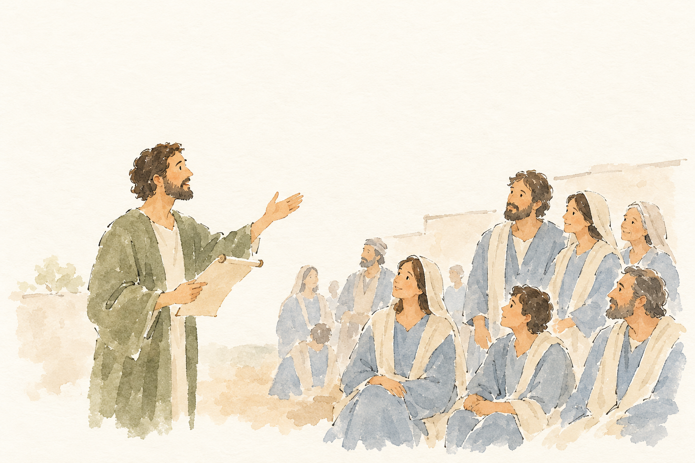
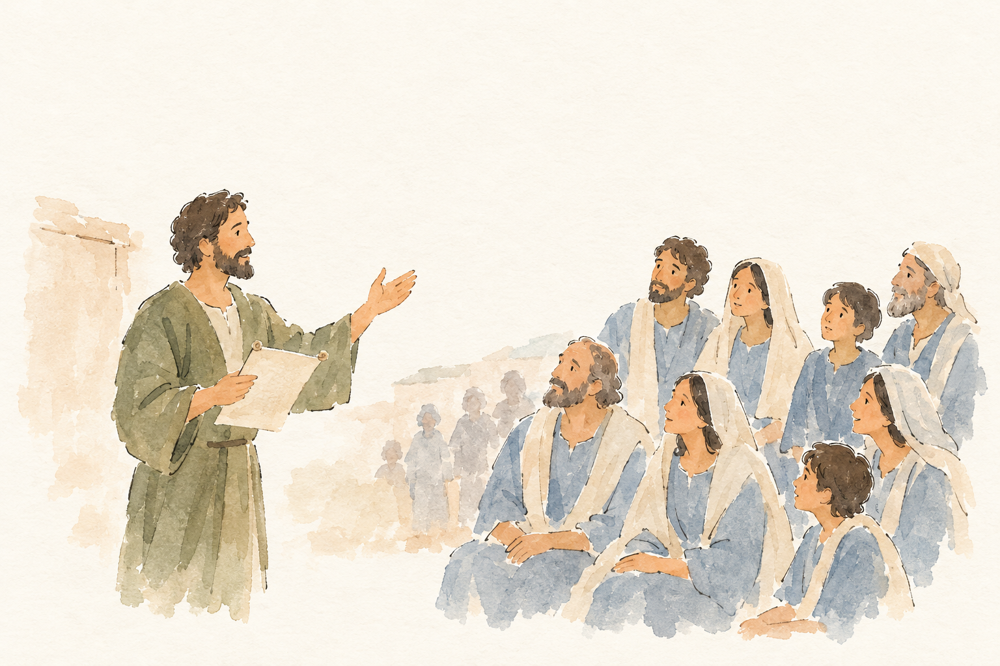
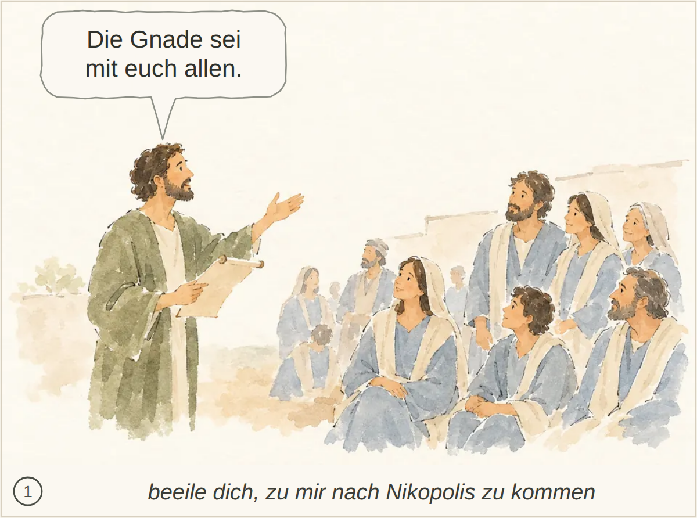

TIT-003-R1__r1v1.png ✔ gewählt: bestanden, 5 Punkte, Kern 1 Die konkrete Botschaft an Titus, die Reisevorbereitungen für Zenas und Apollos sowie gute Werke, Grüße und Segen sind nicht erkennbar.
Blind: A standing man holds a scroll and gestures toward a group. Several people sit or stand facing him as though listening. – Possibly a biblical scene of teaching or preaching, but no visible detail identifies a particular story or exact moment.

TIT-003-R1__r1v2.png: bestanden, 5 Punkte, Kern 1 Die Ansprache mit einem Blatt passt zur Verlesung des Briefes, aber Titus, die Reiseaufträge, die guten Werke und der abschließende Gnadengruß sind nicht erkennbar.
Blind: A standing man holds a pale sheet and gestures toward a group. The people in the foreground look toward him as though listening. – Possibly Jesus teaching a group, but the picture does not identify a particular Bible story or exact moment.

Kachel: bestanden, Kern 1 Die Aufträge an Titus sowie Zenas und Apollos und die Aufforderung zu guten Werken sind nicht erkennbar; auch die Identität des Sprechers bleibt offen.